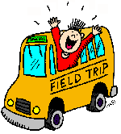

Parents/Guardians, we will have monthly field trips that are very affordable,
with the exception of the summer time the field trips are bi-weekly.We expect all children to attend.
We only choose locations that are nice to our pockets and best of all; we are paying half so,
please financially plan on your child/children attending.
Parents/Guardians, feel comfortable knowing that when we begin to provide transportation
all drivers that are employed here must have a safe driving record. Also, it may provide you with more comfort
knowing that the ODJFS require that all vehicles used for the purposes of transporting children are inspected
weekly by our staff and annual safety inspected by an ASE Certified Mechanic. All drivers are also required
to complete transportation safety and training by The Ohio State Highway Patrol. Written permission must
be secured from the caretaker prior to leaving the premises. The “Child Enrollment & Health Information”
form will be taken for each child, as well as a complete first aid kit, a roster with all children listed,
a working cellphone and health records information for any child who may need care. Children will never
be left unsupervised and smoking shall not occur in any vehicle while children are present.
Until we are able to purchase a van large enough to hold a group of 12 we would have no other choice
but to transport the children in groups of 6 on outings. Currently, we do not provide transportation.
If we have parents as volunteers to help drive and help provide supervision would could possible travel
as a groups.
